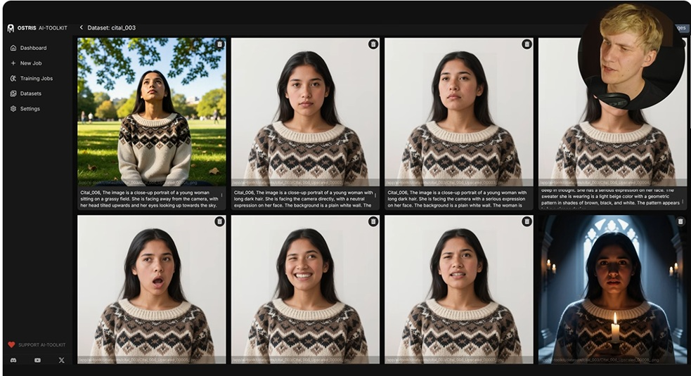

ComfyUI · Mickmumpitz · MASTERCLASS · ANALISI TECNICA
Crea video con personaggi IA coerenti e iperrealistici
Questa pagina analizza la masterclass di Mickmumpitz Create HYPERREALISTIC Consistent AI Characters (761.885 visualizzazioni al 14/11/2026, pubblicata il 7 ottobre 2025), citata nella sitografia di questo sito. Lo stack impiegato nel video è open source ed eseguibile in locale: vediamo i punti chiave per costruire la pipeline ComfyUI completa che genera il video finale del personaggio.
- Punto di partenza — una sola immagine. Da una singola immagine di input (in qualsiasi stile), il workflow «Consistent Character Creator» (CCC) — di fatto un sottografo della pipeline principale costruito sopra i nodi di Qwen Image Edit — genera variazioni del personaggio: pose diverse, espressioni, cambi di outfit (virtual try-on), nuove scene e ambientazioni.
- Qwen Image Edit1 — il motore dietro il CCC. È un modello di instruction-based image editing: a partire da un personaggio di riferimento, ne varia posa, outfit e ambientazione tramite istruzioni testuali, modificando un'immagine esistente anziché generarla da zero.
- Costruzione del dataset. La seconda sezione del workflow è il gruppo Dataset Creation, che «creerà le didascalie e le immagini upscalate del tuo personaggio» — parole dirette del video (minuto 5:13). Tutte le immagini generate vengono salvate nella cartella dedicata al personaggio insieme ai relativi file di testo. Il dataset finale è così costituito da una lista di coppie immagine-testo, il formato standard accettato da qualsiasi trainer LoRA. A questo si aggiunge un modulo di upscaling: Qwen Image Edit genera infatti a una risoluzione nativa limitata (fino a 1024×1024 pixel). Per un dataset destinato ad addestrare una LoRA «iperrealistica» — dove contano i dettagli fini di pelle, texture e tessuti — generare a risoluzione ridotta ed eseguire l'upscaling prima del salvataggio è la pratica raccomandata in ComfyUI, perché consente di addestrare la LoRA su immagini più nitide e ricche di dettaglio.
- AI Toolkit (Ostris) — il motore per eseguire il fine-tuning della LoRA. Il dataset viene passato ad AI Toolkit per addestrare una LoRA dedicata al personaggio sulla base delle immagini appena preparate. La transizione da Qwen a Wan è compatibile perché AI Toolkit addestra la LoRA direttamente su Wan 2.2 come modello target (un requisito tutt'altro che scontato, poiché i pesi in uscita devono corrispondere all'architettura del generatore video utilizzato nella fase successiva).
-
Wan 2.2 — generazione finale di immagini e video. La LoRA addestrata viene impiegata con Wan 2.2 per generare le immagini finali e, tramite un workflow dedicato, le sequenze video. L'architettura Mixture-of-Experts (MoE) di Wan 2.2 si riflette direttamente nel grafo a nodi di ComfyUI: a differenza di un modello monolitico tradizionale (dove si carica un checkpoint e si esegue un unico campionamento), Wan 2.2 separa il modello in due reti esperte distinte (una per l'high-noise e una per il low-noise), richiedendo all'operatore di gestire più moduli intermedi e una taratura manuale su due rami paralleli. Il processo base di generazione non avviene quindi in un singolo step, ma in due passaggi sequenziali di denoising sullo stesso spazio latente, preceduti da due rami paralleli di caricamento (più un eventuale terzo passaggio correttivo in caso di identity drift):
- Struttura e movimento (High-Noise Expert): il primo campionamento elabora gli step iniziali (ad alto livello di rumore), in cui il modello definisce la composizione globale, la traiettoria dei corpi e la dinamica del movimento, fermandosi a metà percorso senza completare la pulizia dell'immagine.
- Dettagli e fisionomia (Low-Noise Expert): il secondo campionamento riceve il latente ancora parzialmente rumoroso prodotto dal primo passaggio e completa gli step finali, ricostruendo le texture fini, la pelle e i tratti del volto.
- Stabilizzazione dell'identità (passaggio opzionale/correttivo): se durante il movimento il volto si deforma (identity drift), occorre aggiungere un ulteriore stadio di vincolo (condizionamento multi-frame o un secondo passaggio video-to-video a bassa denoise) per riallineare la fisionomia.
- RunPod — esecuzione in cloud. Viene utilizzato in due fasi: (a) per il training della LoRA e (b) per eseguire l'intera pipeline ComfyUI fino alla generazione video finale. RunPod è una piattaforma cloud che consente di noleggiare istanze GPU/CPU a consumo, scegliendo tra decine di configurazioni per potenza e tariffa oraria. Per l'esecuzione di ComfyUI, RunPod offre template ufficiali che preinstallano l'ambiente e il plugin ComfyUI Manager in diverse varianti hardware, incluso un template dedicato («WAN 2.2 Text to Video») già configurato per Wan 2.2. Una volta avviato il pod, si accede all'interfaccia di ComfyUI via browser e si esegue l'intero grafo — CCC, creazione del dataset e generazione finale con Wan 2.2 — esattamente come in locale, ma su hardware cloud.

-
01
Le fasi del video, strumento per strumento
I capitoli del video sono nove (otto quelli operativi). La tabella elenca lo strumento impiegato in ciascuna fase, il modello di licenza o costo e l'ambiente di esecuzione (locale o cloud), sintetizzando sia i dati espliciti nella descrizione del video sia le informazioni ricavate dai titoli dei capitoli e dai file allegati da Mickmumpitz.
Fase Strumenti Costo Locale/Cloud Intro (00:00) — A pagamento Cloud (API) Instruction Based Image Editing (00:55) Qwen Image Edit Gratuito, open source Locale, in ComfyUI Installation (03:04) ComfyUI portable per Windows Gratuito Locale Consistent Character Creator (06:03) Workflow CCC su Qwen Image Edit Gratuito (workflow base) Locale; anche RunComfy, a pagamento Dataset Creation (10:15) Gruppo "Dataset Creation" del CCC: upscaling e didascalie Gratuito Locale Training a LoRA (12:16) AI Toolkit; RunPod per il cloud Toolkit gratuito; RunPod a pagamento Locale o cloud Generating images (18:42) Wan 2.2 (workflow immagini) con LoRA Gratuito Locale Generating Video (22:05) Wan 2.2 (workflow video) Gratuito Locale Il grafo CCC è stato aggiornato dall'autore dopo la prima pubblicazione del video: la versione 3.8 (6 gennaio 2026) è costruita su Qwen Image Edit 2511, non sulla 3.6 mostrata nel video.
Una stima dei costi, calcolata sui prezzi RunPod attuali incrociati con benchmark pubblici:
- Training LoRA (personaggio statico con 28 varianti, come nel video): $1,50–17, calcolato da prezzi RunPod ufficiali × 2–4 ore di GPU estrapolate da un caso reale documentato (28 immagini, 2.500 step, ~2,2 ore su RTX 5090).
- Pipeline CCC + Dataset Creation (3–4 prove): $2–12. La L40 (48 GB, $0,82/h) risulta la scelta più sensata — costa meno della RTX 4090 e offre il doppio della VRAM, evitando che Qwen Image Edit saturi i 24 GB della 4090, come documentato in test reali.
- Generazione video (clip di 5 secondi, 3–4 prove): meno di $0,10 con un acceleratore a 4 step su GPU da 24 GB (71 secondi per produrre una clip); circa $0,40–0,50 senza acceleratore, sempre su 24 GB (20 step, 8,5 minuti per clip). Il salto di costo reale si verifica quando la VRAM non basta e il sistema deve scaricare e ricaricare i dati in memoria durante l'elaborazione: in questi casi anche GPU economiche possono richiedere più di un'ora per una singola clip, portando la spesa complessiva a $3–4 per un lotto di 3–4 clip — non per la tariffa oraria, ma per il tempo perso. Una GPU più capiente (ad esempio da 80 GB) evita questo rallentamento e, pur costando di più all'ora, può risultare più economica sul totale.
Stimare un costo complessivo rigoroso è complesso perché ogni fase è indipendente: sommare tutti i minimi o tutti i massimi non restituirebbe un intervallo realistico. Un ordine di grandezza medio si aggira intorno ai $10 per produrre tre clip da 5 secondi ciascuna. È il costo necessario per costruire ed eseguire una pipeline personalizzata (con LoRA dedicata a un personaggio inserito in un ambiente dinamico) e non è confrontabile uno a uno con la tariffa per singolo video di un servizio API come Nano Banana o Seedream, che non include alcun addestramento sul soggetto.
Correzione automatica. La pipeline descritta nel video non prevede un passaggio di valutazione automatica dell'output: ogni generazione va controllata a occhio. Un ciclo generazione→valutazione→correzione avrebbe qui un impatto ancora maggiore rispetto alle pipeline per sole immagini statiche: il video è più esposto a difetti temporali (come l'identity drift descritto nella nota 2) e un errore individuato soltanto a fine elaborazione costa, in tempo e in risorse GPU, molto più di un errore su un singolo fotogramma.
-
02
I modelli di riferimento, un anno dopo
Tutti i modelli citati nella masterclass sono stati superati. Il quadro aggiornato al 14 novembre 2026, con le fonti verificate dove possibile:
- Editing, locale: Qwen-Image-Edit-2511 — gratuito, licenza Apache-2.0, con tenuta dell'identità del personaggio migliorata rispetto alla versione mostrata nel video.
- Editing, locale (alternativa): FLUX.2 klein 4B — gratuito, licenza Apache-2.0, circa 13 GB di VRAM. La sua peculiarità consiste nell'integrare in un unico checkpoint sia il text-to-image sia l'editing (anziché richiedere due modelli separati). Nel contesto della pipeline costituisce un'alternativa a Qwen-Image-Edit per generare il dataset del personaggio: FLUX.2 produce soltanto le immagini di partenza, mentre la LoRA viene comunque addestrata su Wan 2.2. Non occorre quindi alcuna compatibilità architetturale diretta tra FLUX.2 e Wan, ma soltanto che le immagini generate abbiano qualità sufficiente per il training successivo.
- Editing, cloud, a pagamento: Nano Banana 2.1 e Seedream 5.5 — ai vertici qualitativi tra i modelli commerciali, entrambi accessibili solo via API.
- Video, locale: LTX-2.5 — pesi aperti, gratuito sotto i 10 milioni di dollari di ricavi annui, minimo 16 GB di VRAM. Wan 2.2 resta l'ultimo modello della famiglia Wan con pesi aperti; le versioni successive (2.5, 2.6, 3.0) sono disponibili solo via API.
- Video, cloud, a pagamento: Seedance 2.0, Kling 3.0, Veo 3.1 — tra i modelli commerciali più citati per la qualità visiva.
L'impianto della masterclass regge ancora: ComfyUI, workflow CCC e una LoRA per il personaggio principale. Conviene sostituire Qwen Image Edit con la versione 2511 e valutare LTX-2.5 accanto a Wan 2.2 per la parte video, tenendo presente che i modelli usciti da poche settimane non dispongono ancora di una verifica indipendente consolidata.
Fonti principali
-
Qwen-Image-Edit è un modello di editing di immagini sviluppato dal team Qwen di Alibaba, rilasciato il 19 agosto 2025, costruito sopra il backbone Qwen-Image da 20 miliardi di parametri con licenza Apache 2.0 (open source, uso commerciale incluso; Product Hunt). Secondo la documentazione tecnica, Qwen-Image adotta un'architettura a tre moduli principali (NVIDIA):
- Qwen2.5-VL (7 miliardi di parametri): modello linguistico multimodale «congelato» (non riaddestrato), impiegato per l'estrazione delle caratteristiche testo-immagine e l'allineamento semantico; appartiene alla nota famiglia linguistica Qwen nella variante vision-language, capace di elaborare congiuntamente immagini e testo.
- VAE (encoder/decoder, 54M/73M parametri): modulo compatto incaricato di preservare la fedeltà dei dettagli visivi e dei pixel.
- MMDiT (Multimodal Diffusion Transformer, 20 miliardi di parametri): il motore generativo vero e proprio, ovvero il transformer di diffusione che sintetizza l'immagine finale.
-
Wan 2.2 14B non è un modello a singolo passaggio come Qwen Image Edit o FLUX, bensì una Mixture-of-Experts composta da un esperto high-noise (struttura e movimento) e da un esperto low-noise (dettaglio); AI Toolkit addestra entrambi tramite modalità multi-stage, il che significa che un singolo comando di training deve produrre e gestire due set di pesi distinti anziché uno solo. In fase di inferenza in ComfyUI, non si utilizza un unico nodo «tutto-in-uno», ma un grafo multi-modulo composto da almeno 7–8 nodi core collegati in serie e in parallelo (due
Load Diffusion Model, almeno dueLoraLoaderModelOnly, il nodoWanImageToVideoe dueKSamplerAdvancedin cascata con passaggio del latente intermedio). Questa architettura comporta un'operatività articolata, in cui l'utente deve intervenire manualmente su quattro snodi critici del grafo: (1) duplicare i nodi LoRA su entrambi i rami calibrandone separatamente le intensità (tenendo in genere basso il peso sul ramo high-noise per non irrigidire il moto e alzandolo sul ramo low-noise per fissare i tratti); (2) filtrare la compatibilità delle LoRA tra i rami (le LoRA per Wan 2.1 e quelle low-noise per Wan 2.2 restano utilizzabili sul secondo ramo, mentre le LoRA specifiche high-noise vanno escluse dal ramo low-noise per evitare artefatti); (3) tarare lo step esatto di scambio (handoff step) tra il primo e il secondo campionatore; (4) contrastare, nella modalità Image-to-Video (I2V), il problema documentato dell'identity drift, poiché durante movimenti ampi o rotazioni del capo il volto tende a deformarsi progressivamente rispetto al fotogramma iniziale, costringendo l'operatore a inserire moduli intermedi di ancoraggio (come vincoli Start/End Frame o riferimenti multi-vista) o a ricorrere a passaggi correttivi in post-elaborazione. ↩ -
Quando conviene affiancare Blender a Wan 2.2 e quando no:
↩Tipo di inquadratura Pipeline consigliata Motivo Camera in movimento (orbite, carrellate, raccordi spaziali, cambio di focale) Blender + Mappe + Wan 2.2 L'AI pura perde la geometria dell'ambiente; Blender garantisce parallasse e raccordi esatti al primo tentativo. Interazione complessa (due soggetti che si incrociano, mani che afferrano oggetti) Blender + Mappe + Wan 2.2 Evita compenetrazioni anatomiche e arti deformati durante il moto. Primo piano emotivo / dialogo (camera fissa o lieve push-in) Solo Keyframe + Wan 2.2 I2V Un'animazione 3D grezza del viso risulterebbe innaturale e ridurrebbe l'espressività del modello. Atmosfera pura / paesaggi (vento, fumo, acqua, luci ambientali) Solo Keyframe + Wan 2.2 I2V La fisica stocastica nativa del modello è molto più ricca e veloce da iterare senza passare dal 3D.